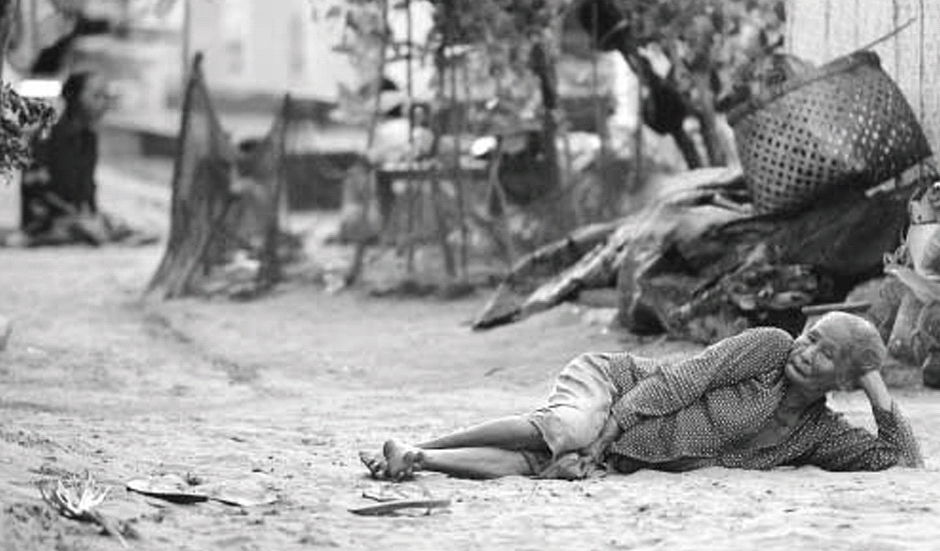
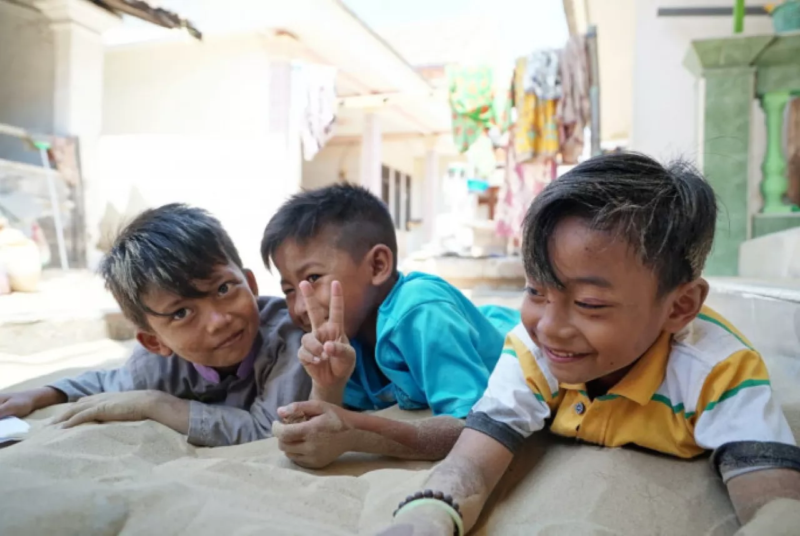
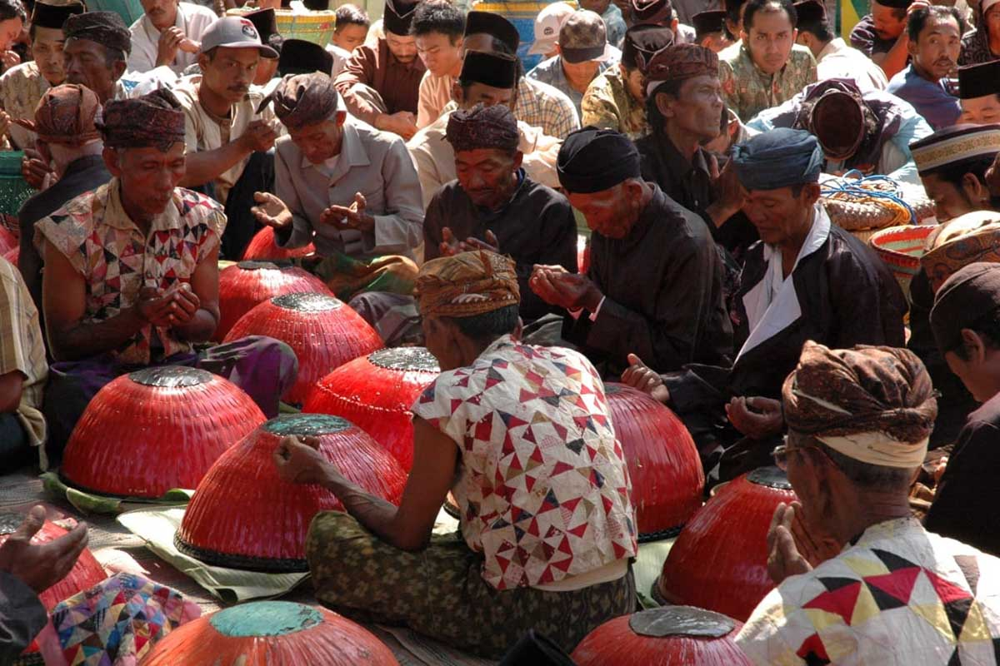

Tidur Beralaskan Pasir
|
Orang Madura itu anekdotal, suka menciptakan hal-hal lucu. Tatkala pasir dipandang sebagai sesuatu yang terkait dengan hal-hal kurang bersih, orang Madura justru membawa pasir merasuk ke dalam kehidupan mereka yang sangat pribadi.
Boleh jadi, hanya ada di Madura pasir dijadikan kasur yang mengasyikkan. Pasir justru membuat sebagian orang Madura lebih pulas tidur. “Ini tradisi kami, mengapa harus risi dan malu,” ujar Abu Rahwi, penduduk Dapinda.
Tradisi unik itu barangkali memang cuma bisa ditemui di Madura, tepatnya di desa-desa di tepi pantai di Kecamatan Batang-batang, antara lain Desa Dapinda, Legung Timur, Legung Barat, dan Lombang. “Kalau sudah mulai bau, pasirnya kami ganti. Pasirnya diambil di dekat saja yang masih segar. Tinggal angkut pakai ember, tetapi setelah pasir yang lama dikeluarkan dulu. Nanti beberapa waktu, setelah pasir yang lama tadi segar, bisa dipakai lagi,”tutur Mamat. Meskipun kebiasaan itu sudah turun-temurun, namun sejumlah penduduk tak mampu menjelaskan muasal waktu mereka mulai mengikuti tradisi itu. Penduduk hanya bilang bahwa tradisi itu berasal dari nenek moyang mereka yang diwarisi secara turun-temurun. Yang pasti, buat orang Madura di desa-desa itu pasir punya makna yang khas. Pasir barangkali menjadi wahana kedekatan antara manusia dan alam. Sejak kecil mereka diajari agar berhubungan dengan pasir, sebagai perlambang alam. |

 |
Nyadhar
|  | Upacara adat 'Nyadhar' merupakan kekayaan budaya dan tradisi masyarakat Sumenep, Madura, Jawa Timur, yang masih tetap lestari hingga saat ini. Upacara ini, biasa dilakukan masyarakat petani garam di Desa Pinggir Papas, Desa Karang Anyar , Kecamatan Kalianget, dan juga Desa Kebundadap Kecamatan Saronggi. Nyadhar dalam sejarahnya, adalah niat dan ungkapan terima kasih kepada Tuhan yang telah memberikan rezeki. Selain itu, juga dilajukan untuk memberi penghormatan kepada para leluhur utamanya penemu garam pertama kali yaitu Syekh Anggasuto. Secara umum, warga Pinggir Papas dan Kebundadap melakukan upacara Nyadhar di sekitar komplek makam leluhur, tempat tersebut menurut orang Madura disebut asta (buju'). |